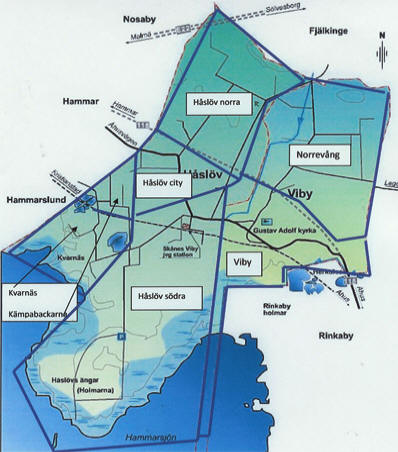

|
VIBY i gamla tider
|
|||
|
Gustav Adolfs socken år 1950 Introduktion till kartläggning av vissa samhällsförhållanden inom byn år 1950. För att analysera och hitta en förklaring till de sociala förhållandens utveckling inom vår by har vi nu startat ett redovisningsprojekt med att göra en sammanställning av olika fakta, som t.ex. boende och familjeförhållanden liksom yrke och arbetsförhållanden för samtliga Vibybor under år 1950.Faktauppgifterna blir givetvis en viktig dokumentation i sig själv men genom dessa skapar vi också en jämförelsegrund mot tidigare dokument i vårt arkiv, som beskriver byn i ett ännu äldre perspektiv. Vi tror oss genom denna jämförelse kunna få fram en intressant bild hur socknen ändrat karaktär genom åren. Många medlemmar har kvar en stor minnesbild av hur Viby såg ut för snart 60 år sen. Genom att "nagelfara" alla husen i byn anno 1950 kommer vi att ha skaffat fram ett mycket tillförlitligt material. |
|||
|
Då vi räknar med
ett stort och tidsödande arbete i att ta fram materialet har vi delat
upp byn, som den såg ut 1950, i olika delar med en ansvarig för varje
del. Område: Ansvarig: Telefon: Kämpabackarna och Kvarnäs Stina Andersson 22 82 04 Håslöv södra Hasse Månsson 22 80 54 Håslöv norra Rune Borgström 544 46 Håslöv city Arne Svensson 24 26 47 Viby by Jan Falk 22 82 18 Norrevång Per-Anders Persson 22 80 06 Varje ansvarig kommer, att till sin hjälp engagera någon eller några personer. Dessutom behövs hjälp ifrån medlemmar, som haft, eller har, någon form av anknytning till respektive område. Då vi i styrelsen redan känner, att detta projekt "är något som berör", tror vi oss kunna få denna hjälp. Detta kan gälla faktauppgifter av olika slag, foton eller kanske något man vill berätta och framhålla från just sitt område. Se indelningen av områden på kartan på sidan 3 - och telefonnumren till resp. ansvarig finns här ovan. |
 |
||
|
Givetvis går det också bra att maila till någon i styrelsen – mailadresserna hittar Du på vår hemsida. Sven-Arne Ström ansvarar för den tekniska delen av projektet med att sammanställa det insamlade materialet i ett dataprogram (Excel) och tillsammans med Per-Anders Persson göra det klart för redovisning. Varje område redovisas för sig som ett tema vid medlemsmöten under ledning av den områdesansvarige med ev. bistånd av medhjälpare. (Per-Anders och Sven-Arne bistår med "det tekniska"). Redovisning sker genom att mötesdeltagarna, tillsammans på filmduken, gör en byavandring inom det aktuella redovisningsområdet, där varje fastighet "besöks" och presenteras med insamlad fakta och gärna också med några bilder. Här skall också lämnas utrymme för kommentarer och ev. tillrättaläggande för att på så vis kunna konfirmera redovisningen. Resultaten från de enskilda undersökningsobjekten skall sammanföras till en enhet för hela området. Denna skall i sin tur, genom siffror och diagram ge en tydlig bild av karaktären för denna del av socknen. När en delredovisning är klar, skall denna länkas samman med tidigare sådana och då ge en bild hur ev. karaktären, nu omfattande en större enhet av byn, förändrats emot tidigare mindre enhet. På samma vis kommer arbetet att pågå tills vi kan presentera en helhetsredovisning av hela socknen. Givetvis skall arbetet med projektet kontinuerligt redovisas på vår Hemsida.
|
|||